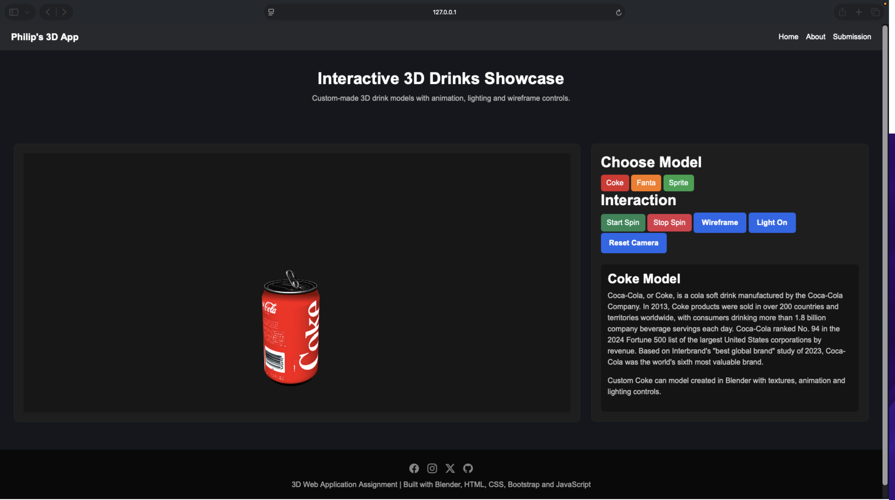
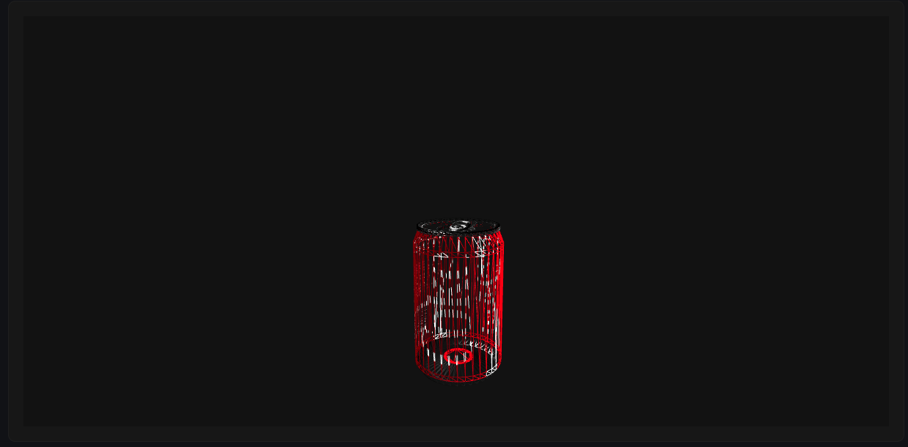
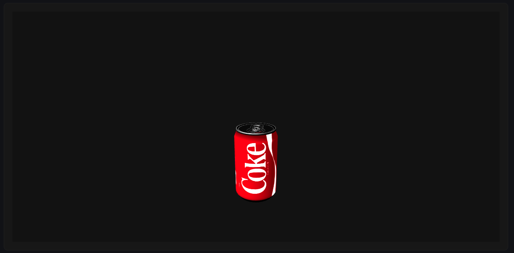
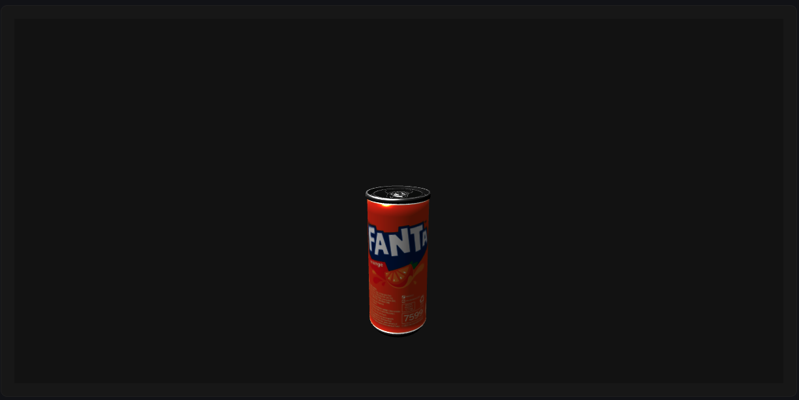
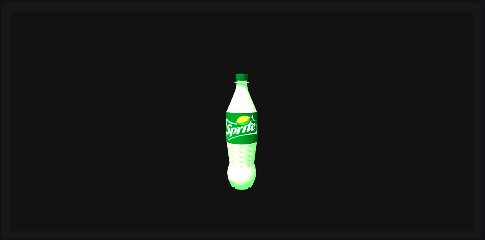

Project Overview
This project is an interactive 3D web application created for the 3D Web Application assignment. The application showcases three Blender-created drink models: Coke, Fanta and Sprite.
Users can switch between models and interact with them using animation controls, wireframe mode, lighting controls and camera movement.
Demo Video
Screenshots





Testing
I tested the application as I built it, checking that everything worked as expected across different screen sizes and browsers.
- Tested model loading and switching functionality
- " " animations and audio playback
- " " responsive layout using browser developer tools
- " " wireframe mode, lighting controls and camera reset
- Verified that all textures and GLB files loaded correctly
Technologies Used
- HTML5
- CSS3
- w3schools
- Bootstrap 5
- JavaScript
- Three.js
- Blender
Interaction Features
- 3D model switching
- OrbitControls camera movement
- Animation playback
- Wireframe mode
- Lighting controls
- Reset camera feature
Generative AI Usage Record
This section records how generative AI tools were used during the development of this 3D web application.
| Use Case | Tool | Outcome |
|---|---|---|
| Debugging audio playback | ChatGPT | It helped me catch an issues where the audio files were pointing to the wrong folder path, which was stopping the sounds from loading |
| Fixing model loading | ChatGPT | Helped correct incorrect GLB file paths when the 3D models were not appearing in the browser. |
| Three.js debugging | ChatGPT | Helped me with fixing the animation playback and camera positioning issues during the development |
Development Resources
| Resource | Purpose |
|---|---|
| Three.js Documentation | Model loading, lighting and interaction |
| Bootstrap Documentation | Responsive layout and interface structure |
| Blender Tutorials | 3D modelling and GLB exporting |
| University Labs | Overall understanding of 3D web technologies |
Video Resources
These tutorials and videos helped me during the development of the 3D models and Three.js integration.